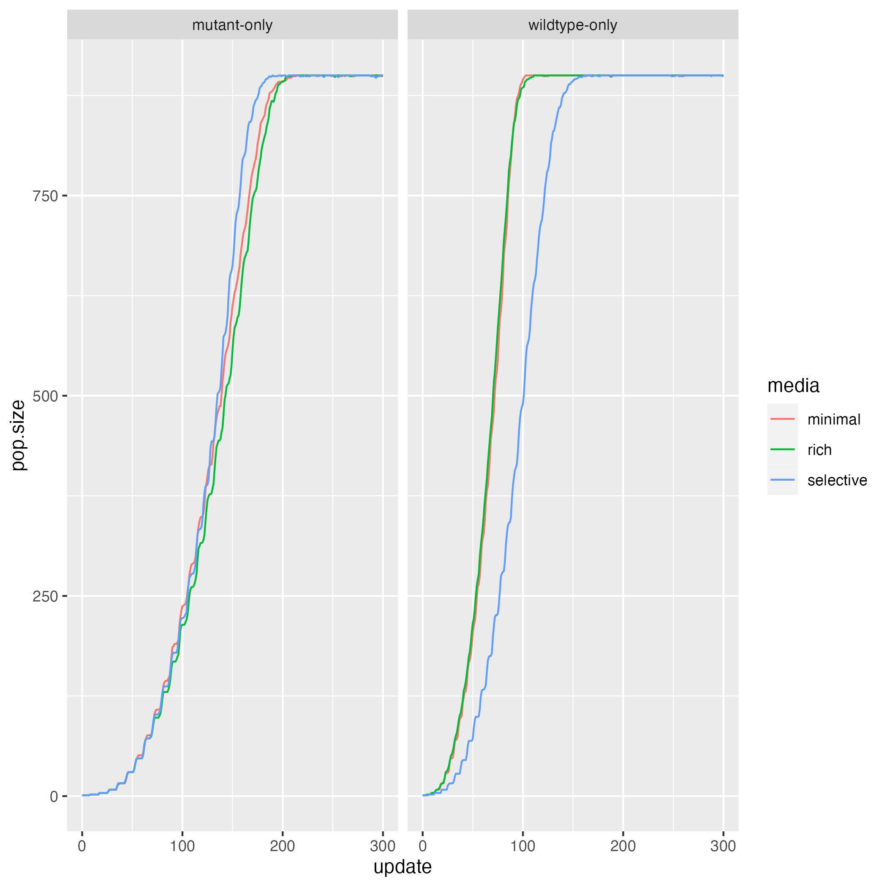
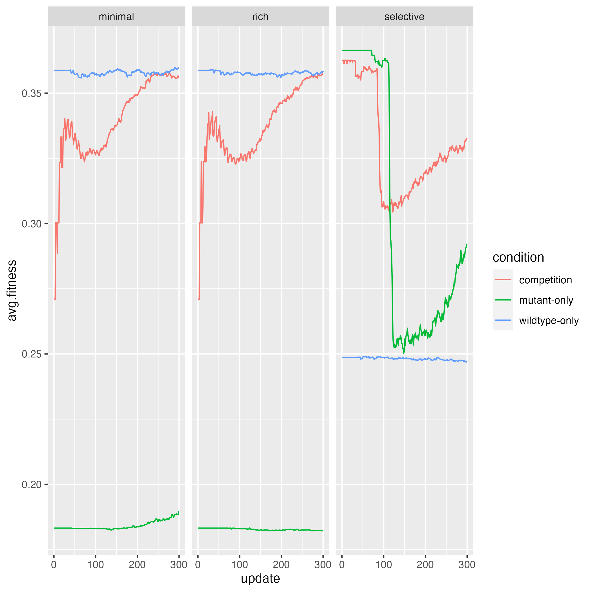
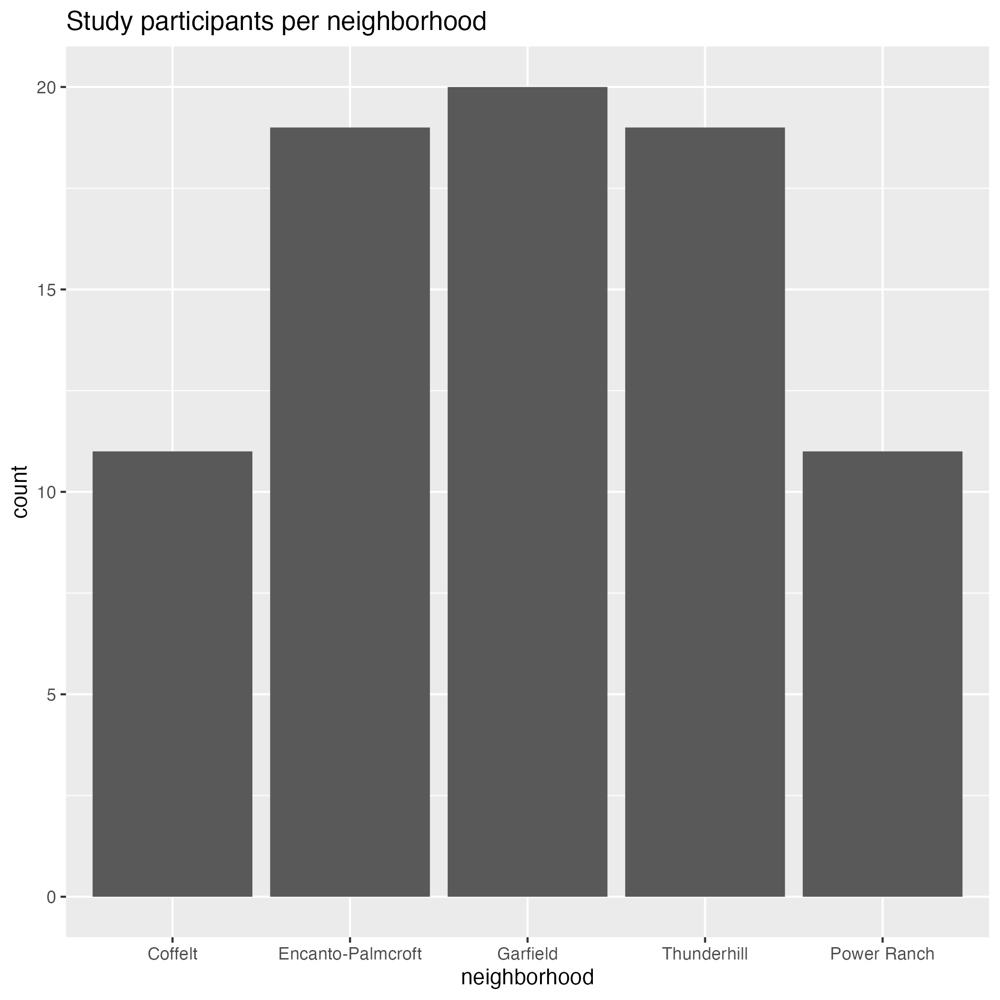
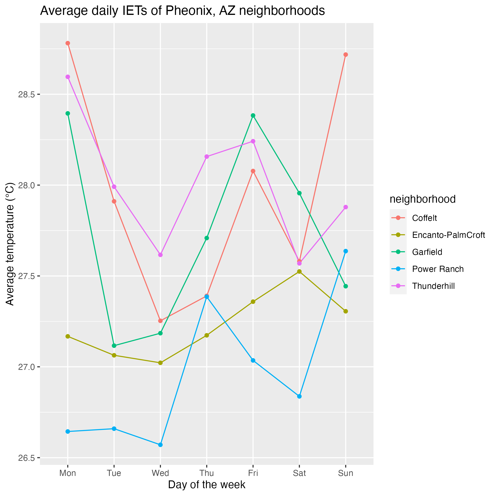

Practicing on real-world data
Project Management Day 2
Final class!
Instructor notes
The idea of this lesson is to give students an opportunity to really stretch their wings and work independently, so the material is pretty open-ended. We have prepared a few datasets for them to practice working on, as well as additional structure to try to support students at different science/coding comfort levels, so students can decide if they want to do the whole workflow themselves (develop questions, analysis, figs), do only parts of it (develop their own analysis and figs), or just practice the coding (recreate a figure from the raw data).
That said, there will be a bit of prep work on your end for this class because this is so open-ended: would strongly encourage being somewhat familiar with the background and data overview sections for each dataset before class, as well as the pre-filled project templates. These shouldn’t be terribly tricky datasets for instructors to work with, and you don’t really need to understand the underlying science (except maybe for the Avida data): just know enough that you could tell a student “that figure/analysis makes sense and is informative”, have some intuition of what is making their code break, etc.
Ideally, students can just read up on what each dataset contains, come up with questions, and happily work their way through it and make some beautiful figures with no issues :-) That said, the ultimate goal for this lesson is that students will leave today with a repo containing a mostly done analysis (data, cleaning script, analysis script, final figs, etc), and maybe have an opportunity to test their R vocab knowledge by practicing their R googling skills‚Ķ üòÅ
tbh, you can be pretty off-script for this lesson (i.e. use different datasets, create different analyses, etc): again, the goal is just for students to really synthesize the lessons, put them into practice, and try to work independently – at base, stress this aspect to them. That said, these datasets were chosen because they should hopefully be easy enough to understand but tricky enough to challenge them a little at this point in their learning.
Otherwise, if you want a script, probably at least emphasize the following points/make sure everyone is on the same page about these things before letting them off on their own:
- Final class!
- Briefly recap previous class, emphasize today is a very open-ended synthesis/capstone day and they should try to leave with something “finished”
- Mention project template script
- Datasets
- There are 3 datasets: each mentions suggested skills to practice, background info, data overview, and analysis hints
- Students can be as independent or not as they want, but you do have some prepared examples that you will be more familiar with (but the examples are basically all tidyverse, fyi üòÖ)
- Some of these datasets def require some external code they haven’t learned in this class to manage more easily: see the “hints” sections. Sometimes there are very specific, heavily-handed described suggestions and sometimes there are just vague suggestions (aka go google it)
To make the work easier on you, you could have people work in pairs (but in their own repos). You could maybe have them work in larger groups/have everyone do the same analysis, but it might feel too much like data viz day 2…
There will be some pre-filled project templates in the folder that goes through the whole process for 1 easy and 1 hard question for each dataset (which will stress the specific ‚Äúskills to practice‚Äù for each dataset; primarily, these are focused on tidyverse approaches): you should look at these before class. These are effectively mini-lessons on their own, but hopefully straightforward enough for a student to follow along on their own (get ‚Äôem some practice for reading through elaborate stackoverflow answers ü•π)
You can reiterate to the class that for those who want a bit more structure/support, you will be most familiar with the details for the prepared material (i.e. they should try to recreate those figs/scripts on their own because you‚Äôll have the ‚Äúanswer‚Äù). But ultimately, it‚Äôs up to you for how much you want to balance giving them independence with the inevitability of dealing with 1 million questions simultaneously ü´°
Misc comments:
re: how the datasets were ranked: basically from less to more “you might want to use code you haven’t seen before to wrangle it.” The “external code” was included so students can have a resource for when they inevitably encounter tricky wrangling situations… also, so they can practice googling!
re: what makes questions “easier” vs “harder”, those divisions are mostly based off how much wrangling effort/function wizardry is involved. There any many ways to answer the questions. And obviously, those aren’t the only questions you can ask for the datasets, so feel free to come up with more.
In the previous class, you completed the following steps:
Created a GitHub account.
Linked your GitHub account with your Longleaf account.
Created and pushed your first repository to GitHub.
Today, now that you’ve been through the entire course, we want to reinforce some of the skills that you’ve learned by having you apply your knowledge to several existing datasets and go through the wrangling, analysis, and visualization process independently as much as you can. By the end of this lesson, you should have a GitHub repo containing scripts for wrangling and analysis for at least one of these datasets that you can show to others (or at least have as reference for your future self).
For each of these datasets (or as many as time allows), we’d like you to do some basic analysis, including the following steps:
Create a directory for the analysis of this dataset, using best practices discussed in the previous class.
Load in the data.
Perform some initial data exploration (What are the rows? What are the columns? How many samples does this dataset have? etc.)
Identify at least 1 research question that you could try to answer with this dataset.
Format the data in a way that allows for this analysis.
Visualize the data in helpful ways to answer your question.
Make your code reproducible by using GitHub.
To help with your analyses, we have included a template document outlining these steps that you are welcome to use.
Datasets
The csvs are available under the data folder (or wherever it’ll be moved to). We have provided links to data that is publicly available for download, as well as some related publications that may give you more information about the data.
These datasets were chosen because we thought they represented a good variety in the different kinds of wrangling and visualization challenges you might encounter with your own data in the futur: we have highlighted a few specific R skills that some of these datasets were meant to challenge you on.
Note
The datasets are presented roughly in order of increasing wrangling complexity. Though you should have most of the basic skills you need to wrangle and analyze these datasets, we have specifically provided the code to aid you in certain wrangling tasks for some of the later datasets: see the “Analysis ideas and hints” callout for each dataset.
For each dataset, we have provided a description of the research question/data collection methods, metadata, and the first few lines of each dataset. Read through these descriptions and work on the dataset you find most interesting. Feel free to work with a partner!
But I thought this was HTLTCode, not HTLTScience!
To get the most out of today’s activities, we highly encourage you to practice going through the whole data analysis workflow as independently as you can, developing your own research questions and analysis ideas.
That said, we have prepared some example research questions and figures for each dataset to get everyone started, so you can decide if you’d rather focus more on coding or science-ing for each dataset. These questions are split into “easier” and “harder” coding challenges, with “harder” challenges generally involving slightly more wrangling.
Thus, based on your comfort level, you can decide how much of the data analysis workflow you want to try independently today:
- Recreate our figures
- Develop your own analysis and figures to answer our research questions
- Develop your own research questions, analysis, figures
AVIDA digital evolution dataset
Skills to practice: working with multiple datasets, pivoting
Background: The following data was generated using Avida-ED, an online educational application that allows one to study the dynamics of evolutionary processes. Digital, asexually-reproducing organisms known as “Avidians” can be placed into something akin to a virtual Petri dish to evolve in, and one can manipulate parameters such as mutation rate, resource availability, and dish size to study how those factors affect the evolution of the population.
Your friend needs your help to analyze their AVIDA-Ed data. They designed a series of experiments around a mutant Avidian that gets an energy bonus when the sugar “nanose” is present and a wildtype Avidian that does not. They wanted to see how competition and resource availability affect the population dynamics of these Avidians.
Your friend grew either the wildtype only, mutant only, or both populations together (competition) in the following 3 environments:
Minimal (no additional sugars present)
Selective (only nanose present)
Rich (nanose and additional sugars present)
Help your friend get started with some of the exploratory data analysis. What interesting patterns can you find between genotype, competition, and resource availability?
Data overview
Data for avida_wildtype.csv shown only:
| update | condition | minimal_avg.fitness | minimal_avg.offspring.cost | minimal_avg.energy.acq.rate | minimal_pop.size | selective_avg.fitness | selective_avg.offspring.cost | selective_avg.energy.acq.rate | selective_pop.size | rich_avg.fitness | rich_avg.offspring.cost | rich_avg.energy.acq.rate | rich_pop.size |
|---|---|---|---|---|---|---|---|---|---|---|---|---|---|
| 0 | wildtype-only | 0.3587786 | 131 | 47 | 1 | 0.2486772 | 189 | 47 | 1 | 0.3587786 | 131 | 47 | 1 |
| 1 | wildtype-only | 0.3587786 | 131 | 47 | 1 | 0.2486772 | 189 | 47 | 1 | 0.3587786 | 131 | 47 | 1 |
| 2 | wildtype-only | 0.3587786 | 131 | 47 | 1 | 0.2486772 | 189 | 47 | 1 | 0.3587786 | 131 | 47 | 1 |
| 3 | wildtype-only | 0.3587786 | 131 | 47 | 1 | 0.2486772 | 189 | 47 | 1 | 0.3587786 | 131 | 47 | 1 |
| 4 | wildtype-only | 0.3587786 | 131 | 47 | 2 | 0.2486772 | 189 | 47 | 1 | 0.3587786 | 131 | 47 | 2 |
| 5 | wildtype-only | 0.3587786 | 131 | 47 | 2 | 0.2486772 | 189 | 47 | 1 | 0.3587786 | 131 | 47 | 2 |
| Column | Type | Description | Values |
|---|---|---|---|
update |
integer | Time elapsed | Ranges 0-300 |
condition |
character | Testing conditions (single population or competition) | Based off csv: wildtype-only, mutant-only, competition |
media_avg-fitness |
numeric | Average individual reproductive success in specified media | Ranges 0-1 |
media_avg-offspring.cost |
numeric | Average individual reproductive cost in specified media | |
media_avg-energy-acq-rate |
numeric | Average individual rate of energy acquisition from environment in specified media | |
media_pop-size |
integer | Population size in specified media | Ranges 0-900 |
All population measurements were determined for minimal, selective, and rich media.
Analysis ideas and hints
Which files have the pieces of data you need? Do you need to mix-and-match anything?
The data could be “tidier”…
Use these questions to develop your own, or answer them as-is. These is no “single” or “correct” way to answer to these questions, and you can refine or broaden the scope of these questions as needed.
Bolded questions have an accompanying figure and code.
Easier
- How does population size change over time for the wildtype (or mutant) in different medias?
- What is the relationship between fitness and offspring cost in competition conditions in different medias?
Harder
- How does the change in fitness over time compare between different treatment conditions and media types?
- Which media type allows for the most maximal performance of the wildtype? The mutant? Competition conditions?
Easier: How does population size change over time for the wildtype (or mutant) in different medias?

Harder: how does the change in fitness over time compare between different treatment conditions and media types?

Western Africa Ebola public health dataset
Skills to practice: working with dates, pivoting
Background: The Western African Ebola virus (EV) epidemic of 2013-2016 is the most severe outbreak of the EV disease in history. It caused major disruptions and loss of life, mainly in the republics of Guinea, Liberia, and Sierra Leone.
How might you represent the dynamics of this outbreak?
Data overview
| Country | Date | Cumulative.no..of.confirmed..probable.and.suspected.cases | Cumulative.no..of.confirmed..probable.and.suspected.deaths |
|---|---|---|---|
| Guinea | 2014-08-29 | 648 | 430 |
| Nigeria | 2014-08-29 | 19 | 7 |
| Sierra Leone | 2014-08-29 | 1026 | 422 |
| Liberia | 2014-08-29 | 1378 | 694 |
| Sierra Leone | 2014-09-05 | 1261 | 491 |
| Nigeria | 2014-09-05 | 22 | 8 |
| Column | Type | Description | Values |
|---|---|---|---|
Country |
character | Country of report | |
Date |
character | Date of report | YYYY-MM-DD |
Cumulative.no..of.confirmed..probable.and.suspected.cases |
numeric | Cumulative number till this day | |
Cumulative.no..of.confirmed..probable.and.suspected.deaths |
numeric | Cumulative number till this day |
Analysis ideas and hints
This dataset contains data for other countries besides the three named above. For simplicity, you may want to focus on only those three regions.
The current format of the data isn’t “tidy”…
You can use
format()to extract specific parts of a date object: e.g. ifxis a date object with the format%Y-%m-%d, you can get the year withformat(x, "%Y").
Use these questions to develop your own, or answer them as-is. These is no “single” or “correct” way to answer to these questions, and you can refine or broaden the scope of these questions as needed.
Bolded questions have an accompanying figure and code.
Easier
- How many cases and deaths in total were recorded by each country from 2014-2016?
- For a specific year, how did the number of cases and deaths change over time for each country?
Harder
- By country, how did the average number of cases and death change each year?
- Are there any seasonal patterns in the average cases and deaths?
Easier: How many cases and deaths in total were recorded by each country from 2014-2016?

Harder: By country, how did the average number of cases and death change each year?
Heat exposure in Phoenix, Arizona ecological dataset
Data source | Related publication
Skills to practice: parsing strings, dealing with NA values
Background: Exposure to extreme heat is of growing concern with the rise of urbanization and ongoing climate change. Though most current knowledge about heat-health risks are known and implemented at the neighborhood level, less is known about individual experiences of heat, which can vary due to differences in access to cooling resources and activity patterns.
To further investigate, the Central Arizona-Pheonix Long-Term Ecological Research Program (CAP-LTER) recruited participants from 5 Pheonix-area neighborhoods to wear air temperature sensors that recorded their individually-experienced temperatures (IETs) as they went about their daily activities.
What kind of relationships can you find between individual activity and neighborhood?
Data overview
| Subject.ID | period | temperature |
|---|---|---|
| 1A | Sat, 8pm-12am | 25.14447 |
| 1P | Sat, 8pm-12am | 26.77962 |
| 1E | Sat, 8pm-12am | 27.21875 |
| 1B | Sat, 8pm-12am | 26.79175 |
| 2N | Sat, 8pm-12am | NA |
| 3A | Sat, 8pm-12am | NA |
| Column | Type | Description | Values |
|---|---|---|---|
Subject.ID |
character | Subject identifier where number (1-5) corresponds to neighborhood | 1=Coffelt, 2=Encanto-Palmcroft, 3=Garfield, 4=Thunderhill, 5=Power Ranch |
period |
character | 4 hour measurement period | weekday, period |
temperature |
num | 4 hour average of IET during specified period | Celcius |
Analysis ideas and hints
We recommend using functions in the
stringrpackage from the tidyverse to parse the strings, particularlystr_sub()andstr_split_fixed().e.g. If you had a vector
x, which contains a bunch of 2 character codes and you wanted to extract the first character:str_sub(x, 1, 1)e.g. If you had a vector
x, which contains information in the formatfirst-second-thirdand you wanted to extract the 1st chunk:str_split_fixed(x, "-", n=3)[,1]
R has some “counting” functions such as
length()andn(): how could you get unique counts? Is there a single function that does that?
Use these questions to develop your own, or answer them as-is. These is no “single” or “correct” way to answer to these questions, and you can refine or broaden the scope of these questions as needed.
Bolded questions have an accompanying figure and code.
Easier
- How many participants were there for each neighborhood in the study?
- On average, which 4-hour measurement period is the warmest? The coolest?
Harder
- What was the daily average temperature for each neighborhood during the study period?
- For a specific neighborhood on a certain day, what were all the individual temperatures experienced for each 4-hour measurement period?
Easier: How many participants were there for each neighborhood in the study?

Harder: What was the daily average temperature for each neighborhood during the study period? 
Footnotes
In particular, see Lenski et al. (2003) and Smith et al. (2016).↩︎